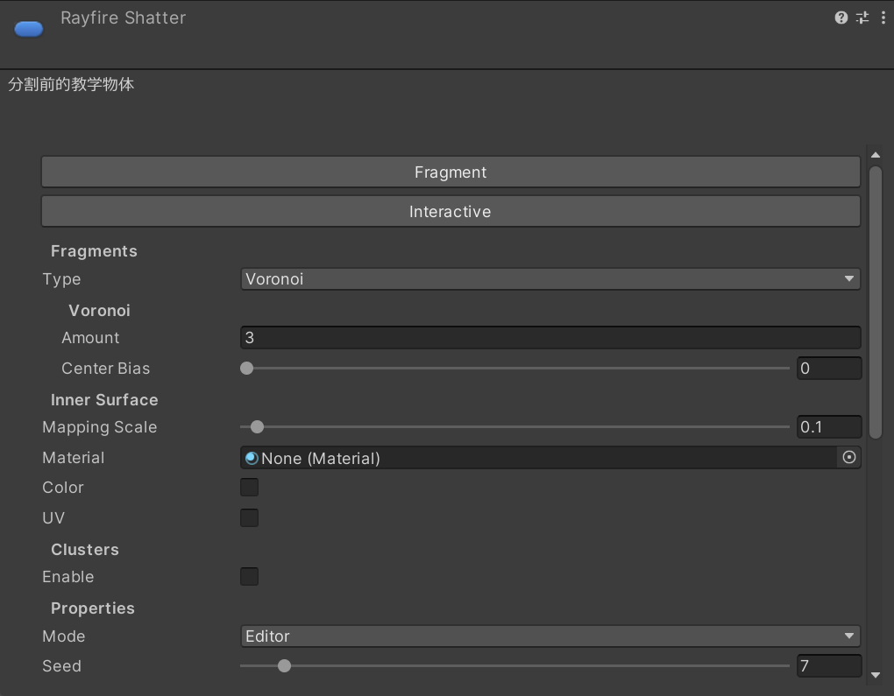
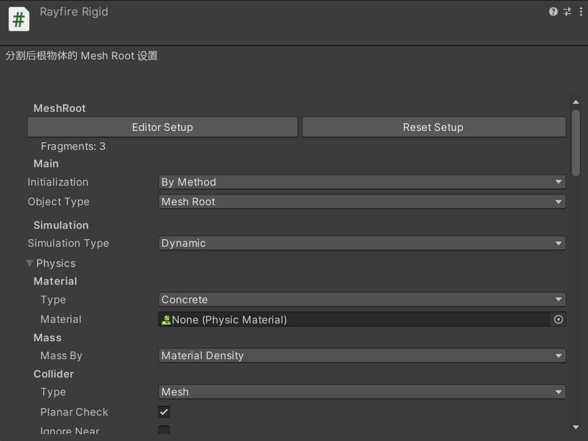

用预制破碎制作可破坏物体
中文 | English
在仓库根目录运行以下命令，用本机 Unity MCP 回放本页示例。 命令也会重拍两种语言的配图。
python Docs/Manual/manual/tools/tutorials.py run destructible-object-creation --capture
点击展开 MCP 操作点击收起 MCP 操作
准备教学样例。${变量} 由配方提供。
{
"variables": {
"intact": "${fixture}/Tutorial_Fence_Intact.prefab",
"fractured": "${fixture}/Tutorial_Fence_Fractured.prefab"
},
"calls": [
{
"tool": "invoke",
"arguments": {
"path": "static:UnityEditor.AssetDatabase/CreateFolder",
"args": [
"${fixtureParent}",
"${folder}"
]
},
"expect": {
"contains": "(String)"
}
}
]
}
本流程用 RayFire 的 Shatter 把整块模型切成碎片，再把碎片整理成带 RayFire Rigid 的预制体。适合围栏、墙体等需要整体碎裂的道具。若只需在完好与破损模型之间切换，参见 可破坏物体：模型替换。
准备模型与 Shatter 组件
把完整模型拖入场景，选中带网格的实例。在 Add Component 搜索 Rayfire Shatter。如果资源是已有预制体，先在场景里处理实例，生成完成后再另存碎片预制体。
设置碎片参数并分割
在组件的 Fragments 区域选择碎片类型，示例使用 Type=Voronoi、Amount=3。Inner Surface Material 可以按需要指定，用于控制断面的外观，示例中的取值仅供参照。
参数合适后点击 Fragment 按钮执行分割。

导出碎片网格
在 Export 区域把 Source 设为 Last Fragments，填写 Suffix 为 _frags，然后点击 Export Last Fragments，导出切割后的网格。
整理层级并保存预制体
分割后选中新增的 *_root 节点。旧围栏示例名为 Prop_Fence_01B_root，其下有多个名为 *_sh_# 的子物体。展开根节点，先核对碎片和网格引用，再把该节点拖入 Project 保存为预制体。保留导出的网格资产，预制体会引用其中的碎片网格。
在该预制体根节点上挂载 Rayfire Rigid。
配置 RayFire Rigid
在 RayFire Rigid 上把 Object Type 设为 Mesh Root，然后点击 Editor Setup，让组件按当前层级登记各个碎片。
示例中其余设置为 Initialization=By Method、Simulation Type=Dynamic、材质 Concrete、碰撞体使用 Mesh，可按道具的实际材质与受力方式调整。

设置 Fracture Layer
在 Hierarchy 选中生成根节点下的碎片子物体，把 Layer 设为 Fracture。保存预制体，重新打开后核对碎片层与导出网格引用。
点击展开 MCP 操作点击收起 MCP 操作
在隔离场景用 RayFire 切出三块网格，再导出网格、设置 Mesh Root 和 Fracture 层。
[
{
"tool": "invoke",
"arguments": {
"path": "static:ShanghaiWindy.Core.AssetBundleManager/LuaEnv/DoString",
"args": [
"local run = assert(loadfile(\"../../Docs/Manual/tutorials/destructible-object-creation/example.lua\"))()\nreturn run(\"${fixture}\")",
"docs-rayfire",
"null"
]
},
"expect": {
"contains": "RayFire saved 3 mesh fragments with Mesh Root and Fracture layer"
}
}
]
测试
在单独的测试场景中放入该预制体并触发破坏，确认碎片按预期分离、断面材质正确、碎片层生效。测试场景可以避免地图里其他物体影响判断。保存的网格与预制体应与本流程描述的一致；如果碎片数量或命名不符，先回到导出步骤重新生成。
模型替换路线见 可破坏物体。